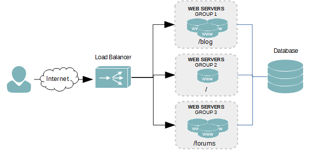
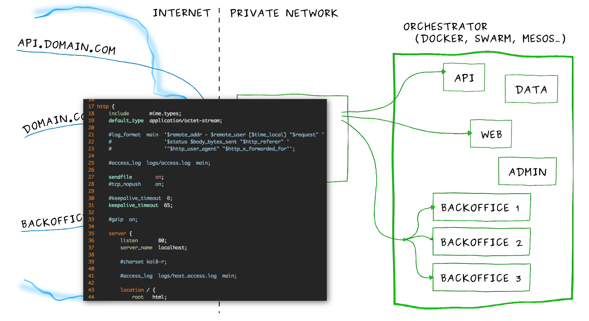
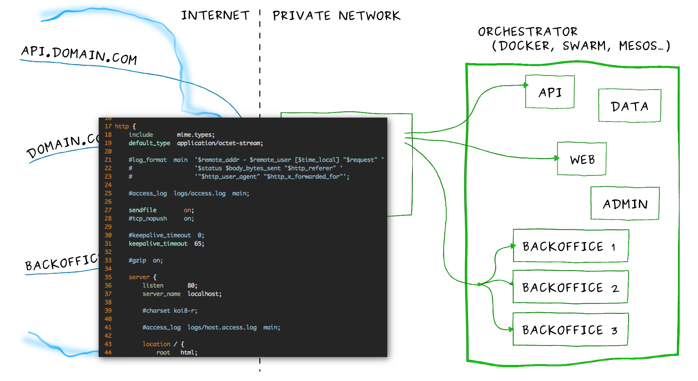
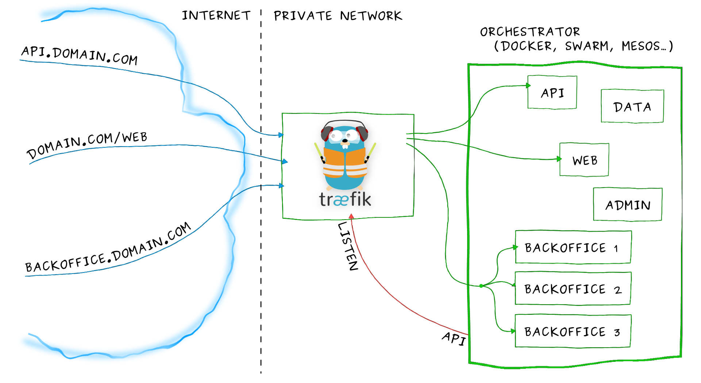

WHY TRAEFIK IS AWESOME
A frenchman in Madrid
- French
- ❤ Spain ❤
- Developer for 12 years
- Part time DevOps
- ❤ Java, Go, Shell, Docker World ❤
- Work @ Containous
- Maintainer of Træfik
Træfik explained to my mother
Mum : "What are you doing in your new company?"
Me : "I am computing a Reverse Proxy."
Mum : "..."
Me : "Your Internet Box is like a proxy!"
Me : "Træfik allows doing the reverse."Mum : "OK! It's like Nginx?!"Me : "Not exactly! Nginx is a server web which can do RP."Mum : "Understood! It's like HA Proxy!"Note:
Autres RP font d'autres choses que RP
Serveur web, authentification
Traefik ne fait que RP, on delègue le reste
Why another Reverse Proxy?
A long time ago in a galaxy far, far away....
- Deploy a service to expose
- Configure the Reverse Proxy
- Reload/Restart it.
In a static way!!

Static infrastructure is (almost) dead!
 

How to configure statically dynamic infrastructures?
One Reverse Proxy to rule them all
Dynamic configuration for dynamic infrastruture

Træfik in details
- Reverse Proxy Dynamic
- Written in GO (Single binary)
- Open Source
- Docker official image
- Multi-Backends
- Hot reloading
- Load-balancing: WRR, DRR
- Circuit breakers
- Websockets
- HTTP2
- Prometheus, DataDog, StatD
- ...
Note:
- Reverse Proxy Dynamic Written in GO (Single binary) Open Source Docker official image
- Multi-Backends : Docker, SwarmMode, Kub, Meso/Marathon, Consul/ETCD2-3/ZK, DynamoDB, Eureka, RANCHER, Service Fabric (1.5)
- Hot reloading
- Load-balancing: WRR, DRR
- Circuit breakers
- Websockets
- HTTP2
- Monitoring : Prometheus, DataDog, StatD
- 1.1 : CLUSTER MODE BASIC AUTH GLOBAL / FRONTEND (1.3) SESSION AFFINITY
- 1.2 : HEALTHCHECKS TRAEFIK BUG
- 1.4 : GRPC - AUTH FORWARD SSL REDIRECT, CUSTOM ERROR PAGES CUSTOM HEADERS, PROXY PROTOCOL MULTI ARCH, HSTS...
- 1.5 : Rate limiting Dynamic TLS Custom Header Docker et Kube
DEMO
Let's talk about Security...
- Auto-generated unsigned certificate
- Statically provided certificates
- Dynamically provided certificates
- File and KV store
- Let's Encrypt certificates
- SSL and DNS Challenges
- Dynamic
- Renewed automatically
- Stored in file or KV store
Note:
4 moyens
.. And High Avaibility
- Based on ETCD raft
- One leader and n workers
- Automatic leader Election
- Use external KV store :
- Store and share configuration
Store and share ACME certificates
DEMO
Some key figures
Træfik
Version 1.5 +12000 ☆ +30M Downloads +1200 LGTM +220 Contributors
Containous
Raised 1M€
1 year old